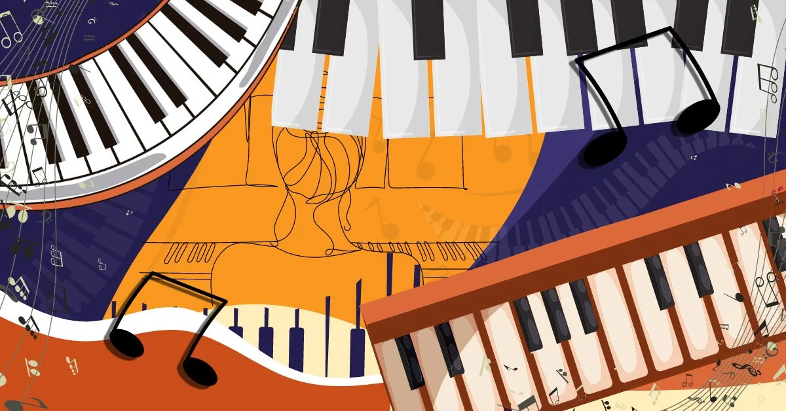

Sound is one of the most intriguing parts of our world. The way a specific frequency can evoke emotion in the receiver (human) of that frequency is truly fascinating, and even more so how people have manipulated woods and metals to produce these vibrations Personally, I (as a pianist) find that the creation and evolution of the piano should be more known as it broadcasts well that same idea of humans learning what materials would create the beautiful sounds we hear today from the instrument. So, let's get into it!